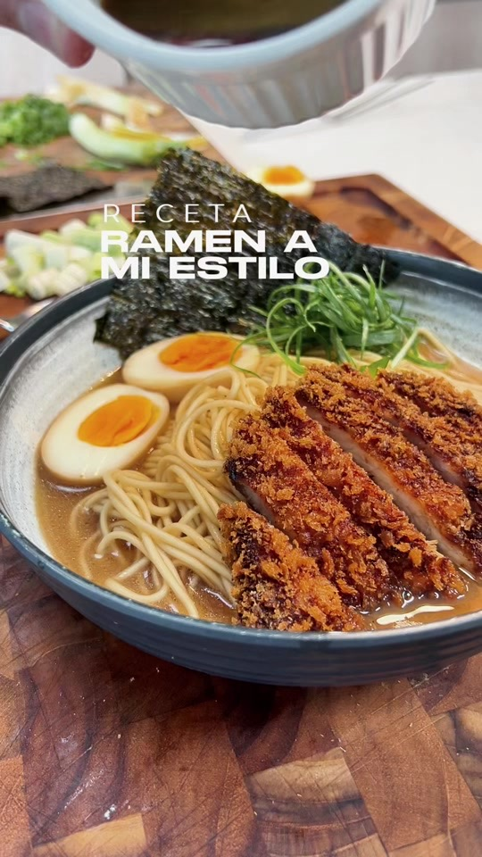

Principales · Japonesa
← Recetas
Tonkatsu Ramen (versión Alexis)

Preparación
- Sella los huesos de cerdo y cuécelos en agua con la zanahoria, cebolla, jengibre y cebollín para un caldo profundo.
- En ese mismo caldo, cuece los fideos ramen.
- Prepara una marinada con salsa de ostras, soja, azúcar, ajinomoto y aceite de sésamo. Deja ahí el huevo cocido y el lomo de cerdo.
- Empaniza el cerdo en panko y fríelo hasta dorar (tonkatsu).
- Sirve: fideos al fondo, el caldo, el huevo marinado, el cerdo fileteado, cebollín, nori, ajonjolí y un toque extra de la marinada.